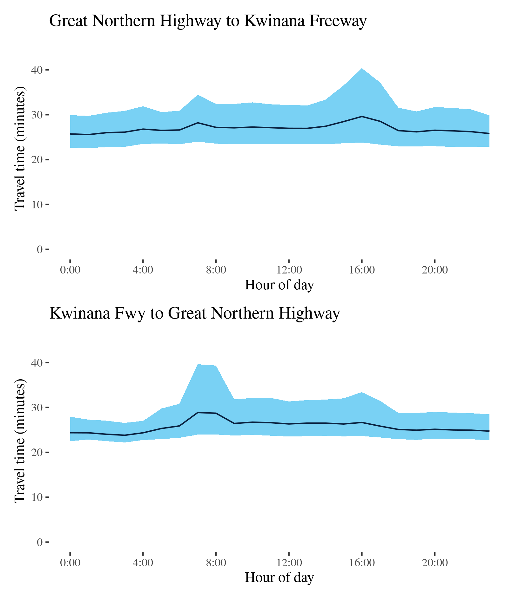

Congestion Report 2020
Congestion Report 2020Perth
The figure below shows all 10 selected freight vehicle routes in Perth and an index of the METR across each route.
The figure below shows changes in the METRs and MEURs between 2019 and 2020 across each of the 10 selected Sydney freight vehicle routes. Mean excess travel time congestion in Perth showed no clear pattern across routes, with some routes exhibiting increases mean excess travel time in one direction and reductions in the other, e.g. the highly-weighted Route 2. Reductions in mean travel time for the southbound direction of Route2, and smaller reduction on other highly-weighted routes, were sufficiently large to result in a reduction in the city-wide measure.
Reductions in travel time uncertainty were correlated with reductions in travel time congestion and, as such, saw a reduction in the city-wide measure of mean travel time uncertainty despite a lack of a clear pattern across the 10 freight vehicle routes.

Route 1 - Roe Hwy to Tonkin Hwy / Tonkin Hwy to Roe Hwy
This route follows the Great Northern Highway north-south between the Tonkin Highway at Muchea and the Roe Highway–Reid Highway junction at Middle Swan. It passes Herne Hill, Upper Swan and Bullsbrook along its way. The BITRE telematics data shows it is a major route for freight heading north out of Perth.
| Direction | Best travel time | Longest median travel time | METR | Least uncertainty range | Most uncertainty range | MEUR | Distance |
|---|---|---|---|---|---|---|---|
| Roe Hwy to Tonkin Hwy | 0:26:37 | 0:29:31 | 1.054 | 0:04:24 | 0:08:55 | 1.681 | 34.5 |
| Tonkin Hwy to Roe Hwy | 0:23:17 | 0:26:38 | 1.107 | 0:02:16 | 0:05:32 | 1.588 | 34.5 |
The best travel times and least uncertainty travelling north were at 4am with a median time of 27 minutes and an interquartile range of 4.5 minutes. The longest median travel times and the greatest uncertainty were during the morning 11am with a median travel time of 29.5 minutes and an interquartile range of 9 minutes. Travel times and uncertainty were slightly higher throughout the day and were largely unchanged from 2019. Mild delays were more apparent in the southern part of the route near the Pearce RAAF Base at Bullsbrook.
The best travel times and the lowest uncertainty travelling south were at midnight and 4am with a median travel time of 23 minutes and an interquartile range of 2 minutes. The longest median travel times and the greatest uncertainty were experienced in the morning at 8 and 2am with a median of 27 minutes and an interquartile range of 6 minutes. There were no distinct peaks. The route was largely unchanged from 2019.
Route 2 (Mitchell) - Hester Avenue to Swan River / Swan River to Hester Avenue
This route follows the Mitchell Highway (Route 2) between Hester Avenue near Ridgewood in Perth’s northern suburbs, and the Swan River near the Perth CBD, and is one of the main routes servicing Perth’s northern suburbs. It also carries some traffic from the north coast of Western Australia.

| Direction | Best travel time | Longest median travel time | METR | Least uncertainty range | Most uncertainty range | MEUR | Distance |
|---|---|---|---|---|---|---|---|
| Hester Avenue to Swan River | 0:23:19 | 0:35:35 | 1.121 | 0:01:56 | 0:26:44 | 4.1 | 35.9 |
| Swan River to Hester Avenue | 0:24:22 | 0:36:13 | 1.065 | 0:01:32 | 0:26:53 | 3.664 | 35.9 |
The best travel time and lowest uncertainty southbound from Hester Avenue to the Swan River was at 3am with a median time of 23 and an interquartile range of 2 minutes. The longest median travel times and the greatest uncertainty were during the morning peak at 7 and 8am with a median travel time of 36 minutes and an interquartile range of 27 minutes, down 11 and 5.5 minutes, respectively, on 2019. There was also a smaller, but still significant, increase in travel time and uncertainty in the afternoon peak that was also less than in 2019. Like 2019 delays were most apparent in two sections: one near Edgewater (south of Joondalup) and the other near Stirling (closer to the CBD).
The best median travel time travelling north was 24 minutes at 5am and the lowest uncertainty were at 3am with an interquartile range of 1.5 minutes. The longest median travel times were at 4pm with a median travel time of 36 minutes and the greatest uncertainty were experienced at 5pm with an interquartile range of 27 minutes, slight increases from 2019. This afternoon peak was more congested than 2019 highlighting the lessened effect of COVID 19 led changes in commuting behavior on afternoon peaks. Unlike the southbound direction, there was no observable morning peak in northbound journeys, reflecting the significance of this route as a corridor for commuter’s heading south towards the CBD. Congestion was again most apparent near Stirling.
Route 2 (Kwinana) - Forrest Hwy to Mitchell Hwy / Mitchell Freeway to Forrest Hwy
This route follows the Kwinana Highway connecting the Forrest Highway south of Mandurah and the Mitchell Highway at the Swan River near the Perth CBD. It is one of the main routes servicing Perth’s southern suburbs and Rockingham and Mandurah south of Perth.
| Direction | Best travel time | Longest median travel time | METR | Least uncertainty range | Most uncertainty range | MEUR | Distance |
|---|---|---|---|---|---|---|---|
| Forrest Hwy to Mitchell Hwy | 0:45:44 | 0:52:04 | 1.046 | 0:05:19 | 0:29:35 | 2.245 | 70.7 |
| Mitchell Freeway to Forrest Hwy | 0:44:32 | 0:58:08 | 1.06 | 0:03:50 | 0:32:26 | 2.21 | 70.7 |
The best median travel time for northbound travel was 46 minutes at 2am and the lowest uncertainty were experienced at 1am with an interquartile range of 5 minutes. The longest median travel times and greatest uncertainty were experienced at 8 and 7am during the morning peak with a median of 52 minutes and interquartile range of 30 minutes, down 19 and 9 minutes on 2019. Travel times and uncertainty remained elevated throughout business hours but to a lesser extent than 2019. Delays were again most apparent immediately south of the Swan River and near the intersection with the Roe Highway at Leeming.
The best travel times and lowest uncertainty heading south were at 11pm with a median time of 45 minutes and an interquartile range of 4 minutes. The longest median travel times and the greatest uncertainty were experienced during the afternoon peak at 4pm with a median travel time of 58 minutes and an interquartile range of 32 minutes, up 5 and 8 minutes, respectively, on 2019. Unlike the northbound reverse route, travel time and uncertainty remained stable throughout the whole day except the peak hours in the afternoon, likely reflecting the significance of this route as a corridor for commuter traffic heading north towards the CBD. Like many afternoon peaks this route was largely unchanged from 2019 and actually saw an increase in peak period travel times and uncertainty.
Route 3 (Roe Highway) - Great Northern Highway to Kwinana Freeway / Kwinana Freeway to Great Northern Highway
This route follows the Roe Highway between its junction the Great Northern Highway (Route 1) in the north and its connection with the Kwinana Freeway (Route 2) at Leeming in Perth’s south.
| Direction | Best travel time | Longest median travel time | METR | Least uncertainty range | Most uncertainty range | MEUR | Distance |
|---|---|---|---|---|---|---|---|
| Great Northern Highway to Kwinana Freeway | 0:25:34 | 0:29:37 | 1.052 | 0:06:57 | 0:16:34 | 1.314 | 34.1 |
| Kwinana Freeway to Great Northern Highway | 0:23:49 | 0:28:52 | 1.081 | 0:04:15 | 0:15:41 | 1.751 | 34.2 |
The best median travel times and lowest uncertainty for southbound travel were at 1am and 11pm with a median of 26 minutes and an interquartile range of 7 minutes. The longest median travel times and the greatest uncertainty were during the afternoon peak at 4pm with a median travel time of 30 minutes and an interquartile range of 17 minutes. Like many afternoon peaks this did not change in 2020. Travel time and uncertainty remained elevated throughout business hours. As in 2019 delays were most apparent near intersections with Route 1 at Middle Swan, Route 4 at Forrestfield and the Kwinana Freeway (Route 2) at Leeming.
The best travel times and the lowest uncertainty travelling north were at 3 and 4am with a median travel time of 24 minutes and an interquartile range of 4 minutes. The longest median travel times and greatest uncertainty were at 7am with a median of 29 minutes and an interquartile range of over 16 minutes, slight increases compared to 2019.

Route 3 (Reid Highway) - Mitchell Freeway to Tonkin Freeway / Tonkin Freeway to Mitchell Freeway
This route follows the Reid Highway between its connection with the Mitchell Freeway (Route 2) north of Perth’s CBD, and its interchange with the Tonkin Freeway (Route 4) at Malaga, in Perth’s near northern suburbs. It passes the Perth suburbs of Westminster, Mirrabooka and Noranda.

| Direction | Best travel time | Longest median travel time | METR | Least uncertainty range | Most uncertainty range | MEUR | Distance |
|---|---|---|---|---|---|---|---|
| Mitchell Freeway to Tonkin Freeway | 0:07:36 | 0:09:53 | 1.071 | 0:00:48 | 0:06:14 | 3.036 | 10.3 |
| Tonkin Freeway to Mitchell Freeway | 0:07:32 | 0:09:33 | 1.067 | 0:00:54 | 0:05:32 | 2.287 | 10.5 |
The best median travel time eastbound on the route was 8 minutes at 2am and the lowest uncertainty were experienced at 3am with an interquartile range of 48 seconds. The longest median travel times and greatest uncertainty were during the afternoon peak at 3 and 4pm with a median travel time of 10 minutes and an interquartile range of 6 minutes. There was also a smaller peak between 7 and 9am in the morning. Like 2019 delays were most apparent near the Kwinana Freeway but were largely unchanged.
The best median travel time travelling west was 7.5 minutes at 4am and the lowest uncertainty was at 1am with an interquartile range of 54 seconds. The longest median travel times and the greatest uncertainty were experienced during the afternoon peak at 4pm with 9.5 minutes and an interquartile range of 5.5 minutes respectively. Unlike 2019 there was a mild morning peak observed in westbound trips. Again delays were most apparent near the Kwinana Freeway, but the route was broadly similar to 2019.
Route 4 - Great Northern Highway to Thomas Road / Thomas Road to Great Northern Highway
This route follows the Tonkin Highway (Route 4) between its junction with the Great Northern Highway, at Muchea north of Perth, and its terminus at Thomas Road on Perth’s southern outskirts. It crosses the Reid Highway (Route 3) north of Morley and the Swan River near Redcliffe, and runs past Perth airport.

| Direction | Best travel time | Longest median travel time | METR | Least uncertainty range | Most uncertainty range | MEUR | Distance |
|---|---|---|---|---|---|---|---|
| Great Northern Highway to Thomas Road | 0:53:55 | 1:01:10 | 1.058 | 0:08:58 | 0:32:49 | 1.96 | 79.9 |
| Thomas Road to Great Northern Highway | 0:53:02 | 1:07:10 | 1.074 | 0:08:22 | 0:25:48 | 1.716 | 79.9 |
The best travel times and the lowest uncertainty for southbound travel to Thomas Road were experienced at 3am with a median travel time of 54 minutes and an interquartile range of 9 minutes. The longest median travel times and greatest uncertainty were experienced at 7am with a median of 1 hour 1 minute and an interquartile range of 33 minutes, both of which occurred during the morning peak and improved by 6 and 11 minutes, respectively, from 2019. There was a mild afternoon peak in uncertainty as well.
The best travel times for northbound trips were at 2 and 3am with a median travel time of 53 minutes and the lowest uncertainty were at 3am with an interquartile range of 8 minutes. The longest and most uncertain travel times were at 4pm in the afternoon peak with a median of 1 hour 7 minutes and an interquartile range of 26 minutes, down 2 and 5 minutes, respectively, from 2019. Like 2019, there was a “third peak” observed in between midnight and 2am, but in 2020 this was restricted to uncertainty, with median travel times unaffected. There was also a small increase in travel time uncertainty during the morning peak.
In both directions, as in 2019, delays were most apparent near the Swan River between Redcliffe and Bayswater. This was true for the morning, afternoon and “third” peaks.

Route 5 - Great Eastern Highway to Stirling Hwy, High Street / Stirling Hwy, High Street to Great Eastern Highway
This route runs between High Street (Route 7) in Fremantle, via the northern side of the Swan River and to the junction of Albany Highway, Great Eastern Highway (GEH) and Canning Highway near Burswood, southwest of the CBD. It traverses the Stirling Highway, Mounts Bay Road, Riverside Drive and the Causeway.
| Direction | Best travel time | Longest median travel time | METR | Least uncertainty range | Most uncertainty range | MEUR | Distance |
|---|---|---|---|---|---|---|---|
| Great Eastern Highway to Stirling Hwy, High Street | 0:21:07 | 0:28:09 | 1.204 | 0:03:31 | 0:18:21 | 3.479 | 20.3 |
| Stirling Hwy, High Street to Great Eastern Highway | 0:22:41 | 0:29:43 | 1.176 | 0:05:26 | 0:20:46 | 2.474 | 20.7 |
The best median travel time travelling from Burswood to Fremantle (i.e. Great Eastern Highway to Stirling Highway) was 21 minutes at 1am and the lowest uncertainty were experienced at 2am with an interquartile range of 3.5 minutes. The longest median travel times were experienced at 5pm with a median travel time of 28 minutes and the greatest uncertainty were at 4pm with an interquartile range of 18 minutes, down 1 and 11 minutes, respectively, from 2019. There were no distinctive peaks in travel time along this route and unlike 2019 uncertainty across business hours was elevated but stable. There may also be a sign of a third peak not evident in 2019.
The best travel times and the lowest uncertainty travelling in the reverse direction (from Fremantle to the CBD (and Burswood) were experienced at 2 and 3am with a median travel time of 23 minutes and an interquartile range of 5.5 minutes. The longest median travel times and greatest uncertainty were at 2pm with a median travel time of 30 minutes and an interquartile range of 21 minutes, down 2.5 and 6.5 minutes, respectively, from 2019. The distinct morning peak from 2019 was no longer evident and uncertainty was higher but stable throughout business hours. Delays were more apparent near the CBD and near Claremont.
Route 6 - Fremantle to Great Eastern Highway / Great Eastern Highway to Fremantle
This surface route follows the Canning Highway between Fremantle and the Great Eastern Highway, to the east of the Perth CBD—like Route 5 but south of the Swan River.

| Direction | Best travel time | Longest median travel time | METR | Least uncertainty range | Most uncertainty range | MEUR | Distance |
|---|---|---|---|---|---|---|---|
| Fremantle to Great Eastern Highway | 0:18:08 | 0:24:35 | 1.139 | 0:06:19 | 0:20:13 | 1.745 | 16.0 |
| Great Eastern Highway to Fremantle | 0:16:33 | 0:23:58 | 1.177 | 0:02:48 | 0:18:21 | 3.194 | 15.8 |
The best travel times and the lowest uncertainty for eastbound travel to the CBD were experienced at 1am with a median travel time of 18 minutes and an interquartile range of 6 minutes. The longest median travel times and the greatest uncertainty were at 11am with a median travel time of 25 minutes and an interquartile range of 20 minutes. Travel time uncertainty gradually increased between 4am and 11am where it formed a distinct peak, which is not necessarily associated with commuter traffic flows, making this route unique in this report. There was also a smaller peak in the afternoon. This pattern was largely unchanged from 2019. Delays were more apparent closer to Fremantle.
The best median travel time travelling west to Fremantle was 17 minutes at midnight and the lowest uncertainty were experienced at 1am with an interquartile range of 3 minutes. The longest and most uncertain travel times were at 10am with a median time of 24 minutes and an interquartile range of 18 minutes. Like the reverse direction, and more distinctly than in 2019, there was a distinct peak in business hours, albeit earlier. Delays were fairly evenly distributed across the route.
Elevated median travel time and uncertainty were observed during business hours in both directions.
Route 7 - Stirling Hwy to Tonkin Freeway / Tonkin Freeway to Stirling Hwy
This route follows the Leach Highway (Route 7) between the Stirling Highway (Route 6), at Fremantle, to the interchange with the Tonkin Freeway (Route 4) near Perth Airport.
| Direction | Best travel time | Longest median travel time | METR | Least uncertainty range | Most uncertainty range | MEUR | Distance |
|---|---|---|---|---|---|---|---|
| Stirling Hwy to Tonkin Freeway | 0:19:58 | 0:24:53 | 1.139 | 0:04:29 | 0:18:16 | 2.335 | 21.9 |
| Tonkin Freeway to Stirling Hwy | 0:21:58 | 0:25:49 | 1.075 | 0:05:21 | 0:18:59 | 2.134 | 22.1 |
The best and least uncertain travel times for eastbound trips from Fremantle to the Tonkin Freeway were at 2am with a median time of 20 minutes and an interquartile range of 4.5 minutes. The longest median travel times and the greatest uncertainty were during the morning peak at 8am with a median travel time of 25 minutes and an interquartile range of 18 minutes, similar to 2019. There were also smaller peaks in median travel time and travel time uncertainty in the afternoon. Delays were evenly distributed along the route but slightly more apparent around Welshpool.
The best median travel time for westbound travel from the Tonkin Freeway to Fremantle was 22 minutes at 1am and the lowest uncertainty were experienced at 3am with an interquartile range of 5.5 minutes. The longest median travel times 8am with a median of 26 minutes and the greatest uncertainty in the afternoon at 4pm with an interquartile range of 19 minutes. Similar to 2019, morning and afternoon peaks were of similar size, and the route was largely unchanged. Delays were more apparent near Fremantle and Welshpool.
Route 8 - Canning Road to Mitchell Freeway / Mitchell Freeway to Canning Road
This route runs from Canning Road on Perth’s eastern fringe, through Perth’s eastern suburbs, to the Mitchell Freeway (Route 2) just west of the CBD. The route follows the Graham Farmer Freeway, Orrong Road and Welshpool Road.
| Direction | Best travel time | Longest median travel time | METR | Least uncertainty range | Most uncertainty range | MEUR | Distance |
|---|---|---|---|---|---|---|---|
| Canning Road to Mitchell Freeway | 0:25:36 | 0:29:17 | 1.054 | 0:11:50 | 0:21:13 | 1.255 | 24.1 |
| Mitchell Freeway to Canning Road | 0:25:02 | 0:29:04 | 1.058 | 0:11:00 | 0:21:01 | 1.297 | 24.1 |
The best median travel time travelling west to the CBD (Canning Road to the Mitchell Freeway) was 26 minutes at 6am and the lowest uncertainty were experienced at 1am with an interquartile range of 12 minutes. The longest median travel times and the greatest uncertainty were at midnight with a median travel time of 29 minutes and an interquartile range of 21 minutes, down 2 and 3 minutes, respectively, from 2019. The reasons for these delays at a time that would ordinarily be assumed to be free running conditions are not apparent, but delays were most apparent on Orrong Road near Carlisle. This midnight peak was also evident in 2019.
The best travel times and the lowest uncertainty eastbound (Mitchell Freeway to Canning Road) were experienced at 11pm and 3am with a median travel time of 25 minutes and an interquartile range of 11 minutes. The longest travel times and greatest uncertainty was in the afternoon at 4 and 5pm with a median time of 29 minutes and an interquartile range of 21 minutes. This was largely unchanged from 2019. Delays were most evident near the Swan River crossing near the CBD.